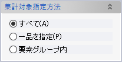
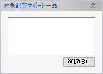
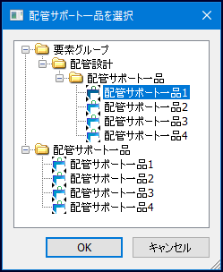
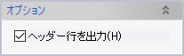

配管サポート集計
配管サポート一品で使われている鋼材やUボルト、パッドについて、サイズ・材質ごとに以下の項目を集計してCSVファイルに出力します。
- 分類（Structural Steel/Pad/U-Bolt/Solid/Component）
- 種別（例：等辺山形鋼、PAD B、A/B/C）
- 寸法（例：65X65X6L、115X115X8t、80A）
- 材質（ただしUボルトは材質設定不可のため空欄）
- 数量または長さ（mm）
- 重量（kgまたはkg/mm）
- 総重量（kg）
Uボルト重量は既定の設定では未定義のためゼロとして出力されます。必要であれば重量設定を追加してください。
操作方法
集計対象の配管サポート一品を選択し、OKをクリックして出力先CSVファイル名を指定します。
パラメータ
集計対象指定方法
- すべて
- すべての配管サポート一品要素が対象となります。
- 一品を指定
- 「対象配管サポート一品」ダイアログボックスが表示されます。

「選択」ボタンをクリックすると配管サポート一品選択ウィンドウが表示されるので、ツリーから一品要素を選択してください。
- 要素グループ内
- 「要素グループ」ダイアログボックスが表示されます。
「選択」ボタンをクリックすると要素グループ選択ウィンドウが表示されるので、出力対象の配管サポート一品要素が含まれる要素グループをツリーから選択してください。
オプション
「ヘッダー行を出力」をチェックすると1行目に項目名が出力されます。不要であればチェックを外してください。